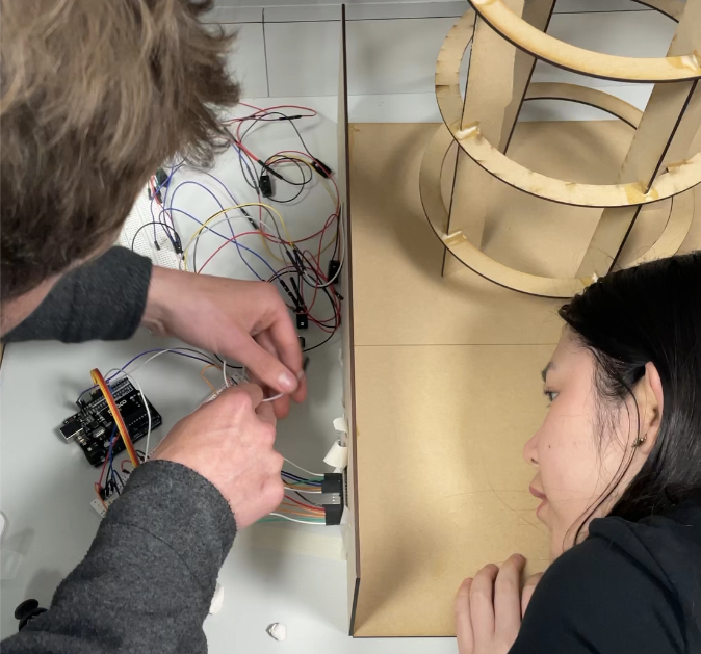
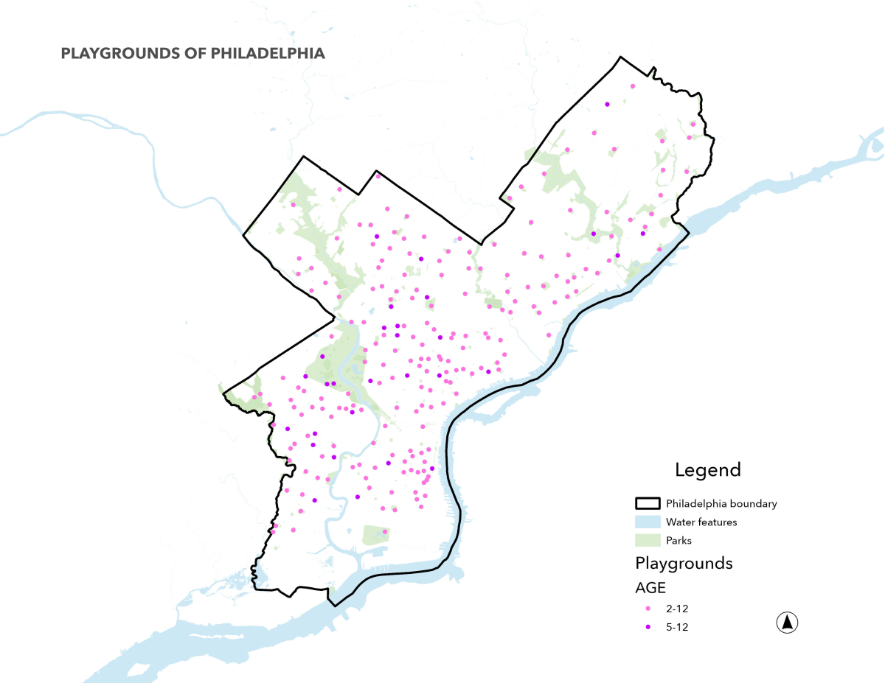
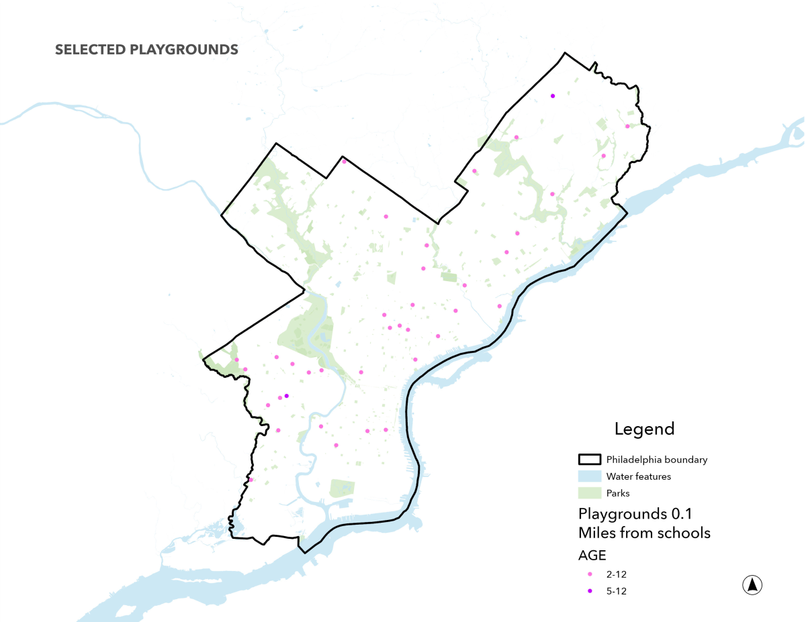
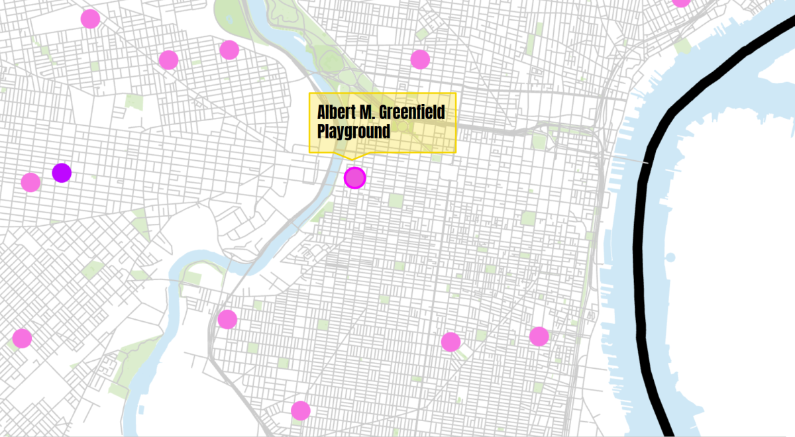
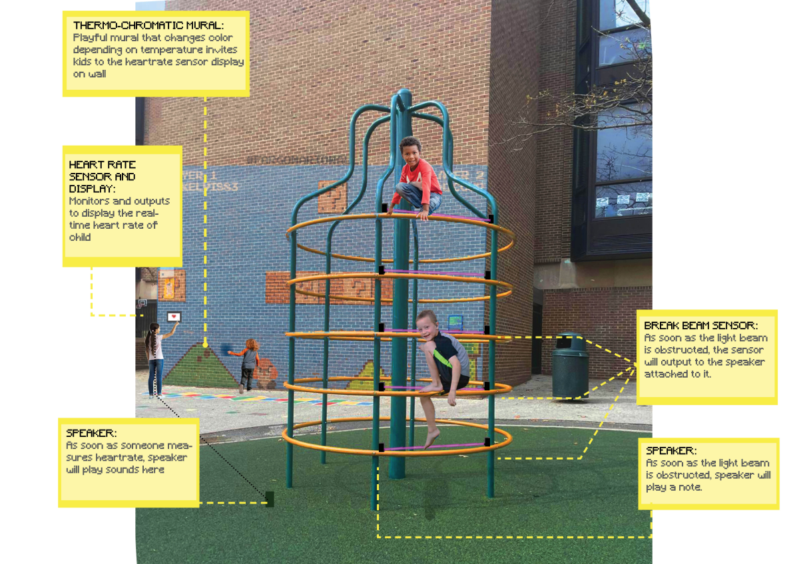
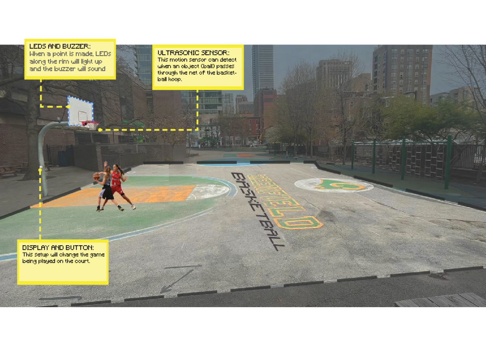
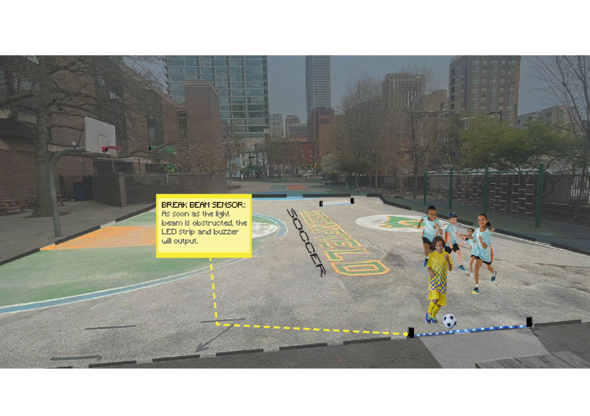

Project Brief
In this project, my team and I had the opportunity to explore an urban issue and tackle it using urban sensors we designed and created ourselves. A few key issues we identified and wanted to address:
- Many kids are playing on tattered playgrounds or abandoned parking lots on the sides of public schools.
- Updating playground equipment can cost $8,000-$50,000.
- There is no substantial line item in the Philadelphia School District’s annual budget to support upgrading playgrounds.
- Currently, a piecemeal system of public-private partnerships funds the handful of schoolyard-improvement projects
- 1 in 5 youth in Philadelphia, the majority of whom are black or Hispanic, are overweight or obese. 70% in North Philly which is nearly double the obesity and overweight rate for youth in the United States. (Source)
In response to these findings, we prototyped a suite of interactive playground installations that we believe would not only support physical activity and learning, but could work as a powerful pilot program for transforming underserved schools and communities across the city of Philadelphia: DigiPlay.


DigiPlay works to solve this challenge of inequitable access to play by transforming dull play spacing into interactive, digitally-latent ones that encourage movement and serve as another avenue for learning and education in schools. Our solution has three major components, outfitting schools that already had some play equipment with DigiPlay sensors, Creating digital experiences for schools with no play equipment, and layering on educational components of the playground. Additionally, our solution is cost effective for schools to adopt, with 1-3 interactive installations on a playground costing about ~$300 to install and another ~$100 to maintain on a yearly basis. Thus, DigiPlay is an inexpensive way to explore the transformative potential of embedded technologies in our built environment.
This project is a culmination of the skills gained in the Spring 2023 Sensing the City class taught by my instructor and advisor, Professor Allison Lassiter. Find the full post of the DigiPlay project on that website here.
Exploratory Analysis
In our exploratory analysis, particularly when identifying which schools to employ this project, we looked at the proximity of playgrounds to schools and environmental features. To test our pilot, we chose a school closer to base called the Albert M. Greenfield playground.



Project Outcomes
In total, we designed and prototyped four digital playground installations:
Heart-rate sensor wall module and Musical jungle gym

Interactive playfield


Prototype testing
The DigiPlay full project and presentation slidedeck include more information, such as technical specifications, wiring and Arduino code tutorials, project phasing and scaling, etc.